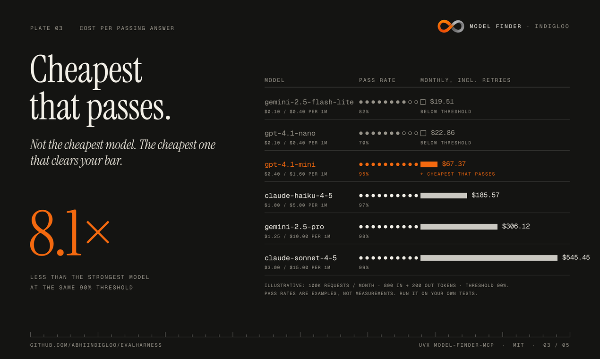
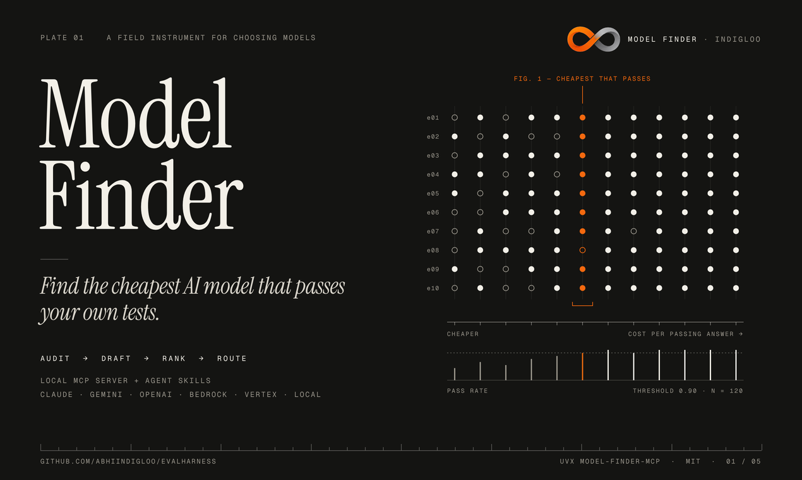
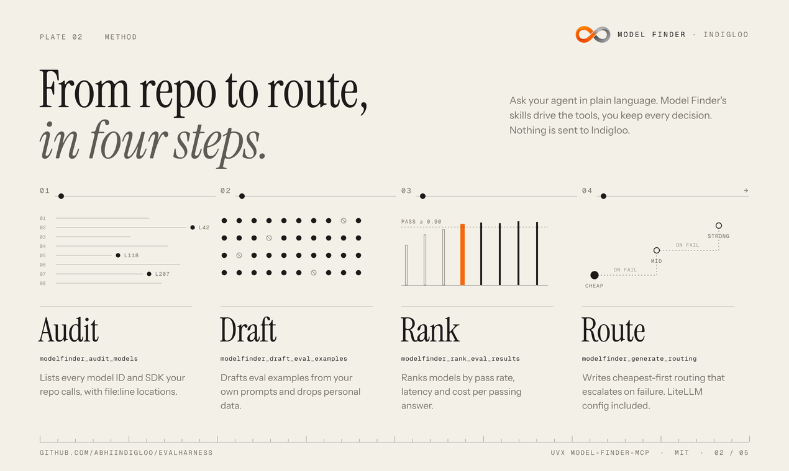
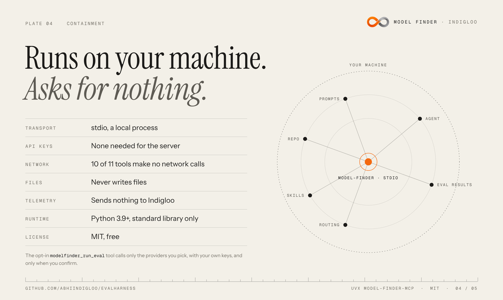
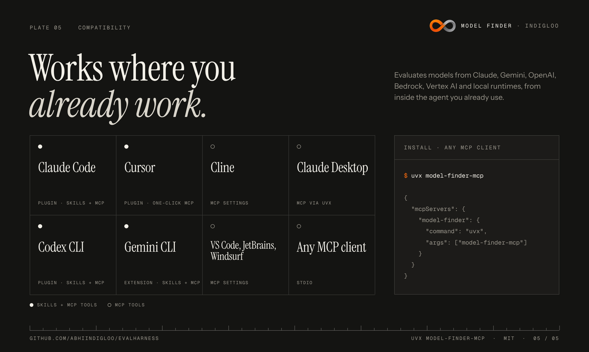

Find the cheapest AI model that passes your tests.
Model Finder is a free, local MCP server and Agent Skills. It audits the models your repo calls, drafts evals from your own prompts, ranks Claude, Gemini, OpenAI, Bedrock, Vertex and local models by cost per passing answer, then writes cheapest-first routing.
- Audit
- Draft
- Rank
- Route
- Claude
- Gemini
- OpenAI
- Amazon Bedrock
- Vertex AI
- Ollama & local
- cost per passing answer
- Claude Code
- Cursor
- Cline
- Codex CLI
- Gemini CLI
- Copilot CLI
- Claude Desktop
- cheapest-first routing
- 11
- MCP tools, over local stdio
- 4
- Agent Skills, plain Markdown
- 10/11
- tools make no network calls
- 0
- API keys needed by the server
02 How it works
Four steps, in plain language.
Ask from Claude Code, Cursor, Codex CLI, Gemini CLI or any MCP client. The assistant calls the tools; you approve anything that costs money.
-
01
Audit
Lists every model ID and SDK your repo calls, with file:line locations, routes and hard-coded IDs. Never returns line content.
modelfinder_audit_models -
02
Draft evals
Turns your existing prompts and fixtures into eval examples, and drops anything with personal data or secrets.
modelfinder_draft_eval_examples…_create_eval_config -
03
Rank
Runs your evals with your keys, after you confirm, and ranks models by pass rate, latency and cost per passing answer.
modelfinder_run_eval…_rank_eval_results -
04
Route
Writes cheapest-first routing that escalates to a stronger model on failure: a standalone router plus a LiteLLM config.
modelfinder_generate_routing
Try asking
Audit which AI models this repo uses, then draft evals from our prompts and test whether a cheaper model passes.
03 Cost per passing answer
Cheapest that passes.
Not the cheapest model. The cheapest one that clears your bar.
cost per passing answer = monthly cost, incl. retriesanswers that pass your checks
A cheap model that fails half the time is not cheap. Model Finder sets the price of every candidate against your own pass threshold, so the ranking reflects what actually ships.
Illustrative example · not a measurement
04 Private & local
Runs on your machine. Network only when you say so.
The MCP server is a single Python standard-library file with no dependencies. It talks to your assistant over stdio and nothing else, unless you start a paid eval run.
- Local over stdioPython 3.9+ standard library. No hosted service, no account, no sign-in.
- The server needs no API keysTen tools never read a key. Eval runs read only the env vars your config names.
- Never writes filesResults go back to your assistant. Nothing is deployed and your active model is never changed.
- Sends nothing to IndiglooNo telemetry, no analytics. Indigloo never sees your code, prompts or results.
- One opt-in tool calls providers
modelfinder_run_evalruns only withconfirm: true, only against the models you list, with your own keys, capped at 50 calls by default (200 max).
- modelfinder_audit_modelsoffline
- modelfinder_draft_eval_examplesoffline
- modelfinder_create_eval_configoffline
- modelfinder_validate_eval_configoffline
- modelfinder_check_outputoffline
- modelfinder_rank_eval_resultsoffline
- modelfinder_generate_routingoffline
- modelfinder_estimate_costoffline
- modelfinder_estimate_memoryoffline
- modelfinder_scan_sensitive_dataoffline
- modelfinder_run_evalopt-in · network
05 Compatibility
Works where you already work.
Installs as a plugin with skills where the client supports it, and as plain MCP tools everywhere else. Any client that speaks MCP over stdio can run it.
- Claude CodePlugin · skills + MCP
- CursorPlugin · one-click MCP
- Codex CLIPlugin · skills + MCP
- Gemini CLIExtension · skills + MCP
- Copilot CLIPlugin · skills + MCP
- Claude DesktopMCP via uvx or .mcpb
- ClineMCP settings
- VS Code, JetBrains, WindsurfMCP settings
Evaluates
- Anthropic Claude
- Google Gemini
- OpenAI
- Amazon Bedrock
- Vertex AI
- Ollama & OpenAI-compatible local
It can also estimate whether a local model's weights and KV cache fit your GPU, before you download anything.
06 Install
One line. No pip install.
Run it with uv, add it to your client's MCP settings, then ask your assistant to find you a cheaper model.
$ uvx model-finder-mcp
- PyPI: model-finder-mcp · v1.3.5
- MCP Registry:
co.indigloo/model-finder - Source & per-client guides: github.com/Abhiindigloo/EvalHarness
{
"mcpServers": {
"model-finder": {
"command": "uvx",
"args": ["model-finder-mcp"]
}
}
}
Needs uv. Paid eval runs read API keys from the server's env, for example OPENAI_API_KEY; the other ten tools need none.
> /plugin marketplace add Abhiindigloo/EvalHarness > /plugin install model-finder@model-finder
Installs the four skills and the MCP server together. Requires python3 on your PATH.
# Codex CLI codex plugin marketplace add Abhiindigloo/EvalHarness codex plugin add model-finder@model-finder # Gemini CLI gemini extensions install https://github.com/Abhiindigloo/EvalHarness # GitHub Copilot CLI copilot plugin marketplace add Abhiindigloo/EvalHarness copilot plugin install model-finder@model-finder
Cursor: install from cursor.directory or add the JSON config above.
07 The plates
A notebook for choosing models.
The launch plates, drawn in the Quiet Instrument system: paper, graphite, ink and one signal colour. Scroll sideways.



